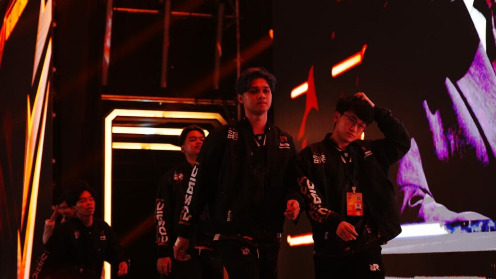
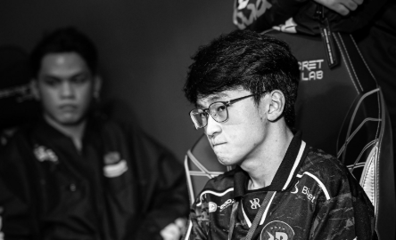

Perjalanan RRQ Hoshi di M6 World Championship harus berakhir setelah kekalahan 3-1 dari Selangor Red Giants (SRG) di lower bracket. Pertandingan yang digelar pada 11 Desember 2024 ini menjadi momen sulit bagi tim berjuluk Sang Raja. Melawan SRG, RRQ mencoba bangkit, namun tak mampu mengatasi strategi matang dari tim tuan rumah. Penampilan impresif SRG, yang dipimpin Arcadia, menjadi kunci keberhasilan mereka, menyisakan RRQ dengan kekalahan kedua dan eliminasi dari turnamen.
GUGUR!!! RRQ Hoshi Dibuat Kewalahan Hadapi Selangor Red Giant


Meski tampil dominan sejak Swiss Stage tanpa kekalahan, RRQ mulai kehilangan momentum di babak Knockout Stage. Setelah mengalahkan Team Vamos 2-1, mereka kalah tipis 3-2 dari Team Liquid ID di upper bracket, memaksa mereka turun ke lower bracket Kekalahan ini menyisakan Team Liquid ID sebagai satu-satunya wakil Indonesia di M6. Dengan perjuangan RRQ yang berakhir, fokus kini tertuju pada langkah terakhir Team Liquid ID di lower bracket untuk mempertahankan harapan Indonesia di turnamen tersebut. Kekalahan RRQ Hoshi membuat tim esports Moblie Legends: Bang Bang menyisakan Team Liquid ID di ajang M6 World Championship. Team Liquid ID juga tercatat mengalami kekalahan ketika berhadapan dengan Fnatic ONIC PH di final upper bracket dengan skor 3-1 dan harus menjalani babak final di lower bracket.
Contact Us
If you have any inquiries or want to collaborate with RF ExtraNews, don't hesitate to get in touch!
Email Us